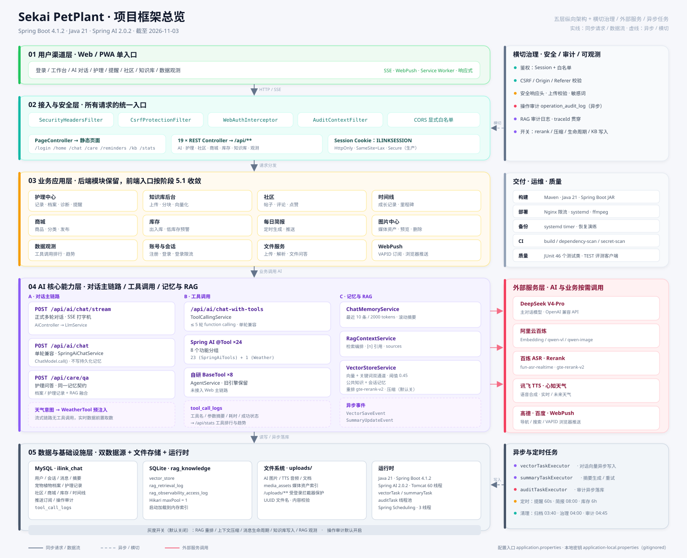
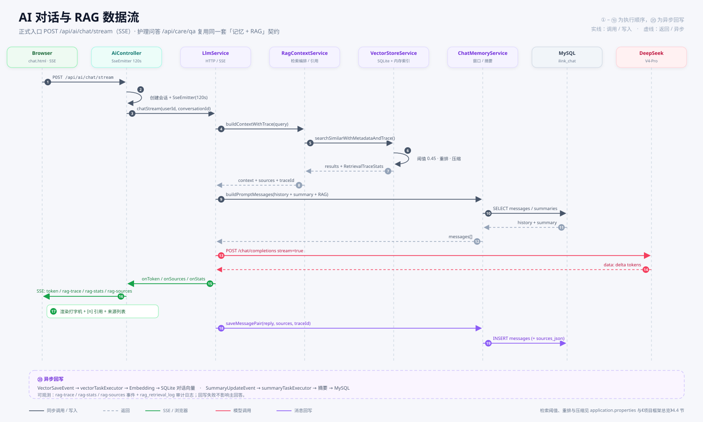

AI 宠物 / 绿植护理平台：Web 单入口、Spring Boot 单体、MySQL 业务库 + SQLite 向量库。 下面两张图分别回答「系统由哪些层和模块组成」与「一次 AI 对话数据怎么流动」。
五层纵向架构：用户渠道 → 接入与安全 → 业务应用 → AI 核心 → 数据与基础设施；右侧为横切治理、交付运维、外部服务与异步任务。

以 POST /api/ai/chat/stream 为例：请求 → RAG 检索 → 记忆组装 → 模型流式生成 → SSE 回传 → 消息落库 → 异步向量/摘要写入。

/api/ai/chat/stream，SSE 多轮/api/care/qa，复用记忆 + RAG/api/ai/chat-with-tools，单轮/api/kb/uploadWebAuthInterceptorvector_store + 检索审计日志CHAT_VECTORSTORE_RERANK_ENABLEDCHAT_RAG_COMPRESSION_ENABLEDAPP_MESSAGE_LIFECYCLE_ENABLEDAPP_KB_WRITES_ENABLEDAPP_RAG_OBSERVABILITY_ENABLEDAPP_AUDIT_ENABLED 默认开启care、chat、community、kb、reminders、stats。
旧 AgentService / MessageRouter 也未接入 Web 主链路。